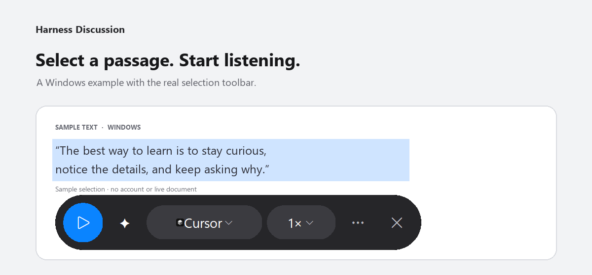

Select text. Press play.
Harness Discussion reads the text you select in any Windows or Mac app, with the voice from your Cursor or Codex sign-in. No API key. Local voices read when neither can.
Windows 11 64-bit · macOS 13+ on Apple silicon · MIT · unofficial
Select a passage in a browser, an editor, or a document, and a small bar appears beside it. Press play to hear the passage read aloud, one sentence after another, in the voice you already signed in with.

Pause when you need to, skip back a sentence, or stop. The app you were reading in keeps focus the whole time.
What the bar does
Drag or double-click to select text in a browser, Notepad, VS Code, and most other apps. The bar shows up next to the selection and never takes focus from the app you're in.

The sign-in you already have
Reads with Cursor's voices through the Cursor desktop sign-in, or with the Codex realtime voice from your ChatGPT sign-in. No API key. Codex uses your plan's Codex access and counts toward its limits.
Always has a voice
If Cursor and Codex can't speak, Kokoro reads on your computer after a one-time 120 MB download. It covers English, Spanish, and French. Then Edge neural voices and the offline Windows voices. On a Mac, the built-in macOS voice.
Summarize
✦ next to Play summarizes the selection on your computer with Qwen3-4B, then reads the summary. The first use asks to download the model once (2.5 GB, checked by SHA-256).
Pause, skip, speed
⏸ pauses and ▶ continues from the same spot. ⏮ and ⏭ move by a sentence, and ■ stops. Pick 0.5× to 2× from the bar's speed menu. Your choice is saved.
A shortcut, too
Ctrl+Alt+R on Windows, or ⌥⌘R on a Mac, reads the selection at once. Press it again to stop. Change it in Settings → Reading.
Six languages
Hebrew, English, Arabic, Russian, Spanish, and French. In Auto, Cursor and Codex infer the language, and Edge and Windows tell Hebrew, Arabic, and Russian apart by script. Kokoro reads English, Spanish, and French. Or pick one from More (…) → Language.
Optional automatic updates
On Windows, installs new releases when the app is idle, after checking the installer's SHA-256 digest. Off by default. On a Mac, Settings shows new versions and installs one when you click Download.
Speech-to-text server
An optional local, OpenAI-compatible endpoint lets apps such as OpenWhispr transcribe with the same Codex sign-in. Details.
Rewrite and dictate (Mac only)
On a Mac, ✎ or ⌥⌘E rewrites text you can edit and pastes it back, and holding ⌥⌘D types what you say. Off by default. These aren't available on Windows.

Read-along captions
The sentence being read appears above the bar, on Windows and Mac. Long sentences pan across the line. Set the font size, background, and opacity in Settings → Captions.
Rendered by the Windows app with a sample sentence. Full size.

You set the order
Settings → Voices lists the sources in reading order: Cursor, Codex, Kokoro, Edge, then Windows. Each row shows whether the source is ready, its voice where it has a choice, an on/off box, Test, and arrows to move it. If one source can't read, the next one does. The bar's source menu moves a source to the top.
Windows Settings with example statuses, not a live account. Full size.
Where your text goes
Each voice source sends reading text to a different place. For local read-aloud, enable only Kokoro and Windows or macOS in Settings → Voices.
Mac Writing and Dictation have separate source settings. For local rewrites, disable Cursor and Codex in Settings → Writing and use Local. Dictation sends microphone audio to Cursor or Codex. Turn off both sources in Settings → Dictation to disable transcription through those services.
Password fields are never read. Summarize runs on your computer. The log records engines, timing, and errors, never your text.
Get started
Install
Run the installer. It installs for your user only and needs no admin rights. On a Mac, drag the app to Applications.
The app isn't code-signed. On Windows, SmartScreen may warn you: choose More info, then Run anyway. On a Mac, choose Open Anyway in Privacy & Security, then grant Accessibility access when the guide asks. You can read and build the source yourself.
Coming from Codex Speak or Select to TTS? It's the same app under a new name. The installer replaces it and keeps your settings.
Sign in
Sign in to the Cursor desktop app, or install the Codex CLI and run
codex loginonce. Without either, the app uses Kokoro if you download it, then the Edge and Windows voices, or the macOS voice on a Mac. The first time it starts, the app opens Settings so you can check the voice sources.Select and play
Select text with the mouse and press ▶ on the bar. ⏸ pauses, ⏮ and ⏭ move by a sentence, and ■ stops.
Tune it
Choose Settings… from the bar's More (…) menu, or click the tray or menu bar icon. Voices sets the source order and speed. Captions, Reading, Summarize, and General hold the rest, including start at sign-in and updates.
Before you install
The Codex voice is experimental
Codex's realtime API is marked experimental, and about 1 in 12 Codex reads in testing ended early or stayed silent. Silence moves the read to the next source on its own.
Apps that hide their selection
On Windows, the app reads only text that apps expose and never copies your selection, to protect your clipboard. Apps that hide their selection can't be read there. On a Mac, the app can borrow ⌘C for those apps and then puts your clipboard back. You can turn this off.
Mouse selections only
Drag or double-click shows the bar. Keyboard selections with Shift+arrows don't.
Uninstall
On Windows, use Settings > Apps. This removes the app, its sign-in task, and the Kokoro model. Your preferences stay in %APPDATA%\harness-discussion.
MIT licensed, written in Python
Bug reports, fixes, and new language voices are welcome.